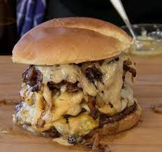

King's Cuisine I
Quadzilla Burger
Ingredients
1 Teaspoon of Togarashi powder
1/4 Cup (4 tbs) of Kewpie mayo
1/4 Cup (4 tbs) of Japanese worcestershire sauce
16 Ounce ((4 patties)) of 80/20 ground beef
2 Teaspoons of Okonomi sauce
1/2 Cup (8 tbs) of Caramelized onions
3 ((Parmesan.American and Cheddar Jack cheese slices)) of Cheese slices

- Prepare the two buns on heat at a low temperature for 5 minutes
- Mix the Japanese worcestershire sauce and kewpie mayo together.
- Add the Togarashi powder to the sauce and mayo mix
- Fry the four patties and caremelized onions on heat for 12 minutes
- Place the cheese on the patties as they fry
- Place each patty on on the bread buns in succession
- Add the onions to the mix
- Pour the worcestershire sauce mix on the burger
- Add the final bun